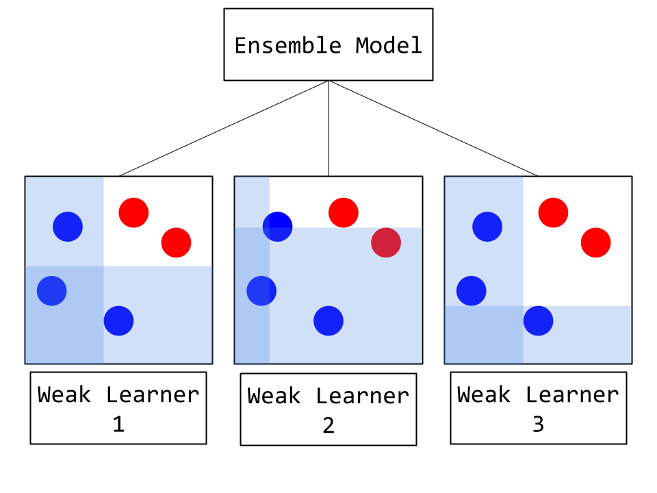
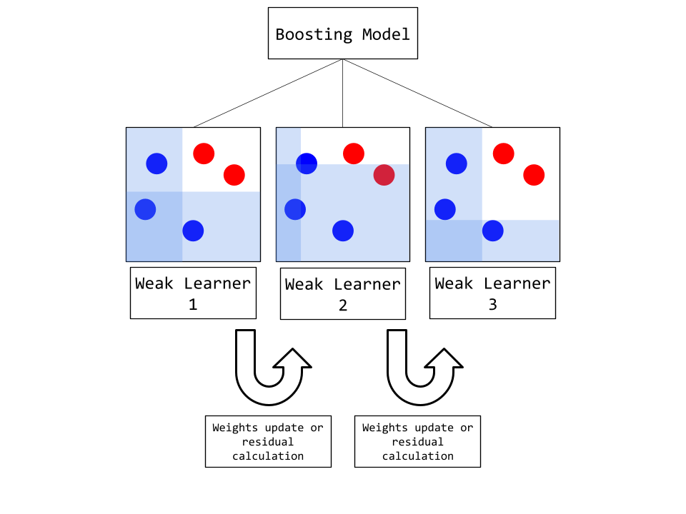
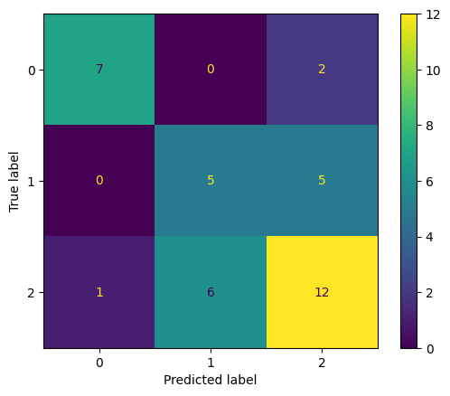
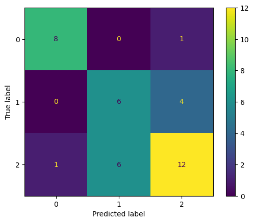
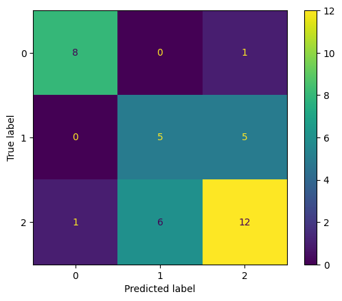
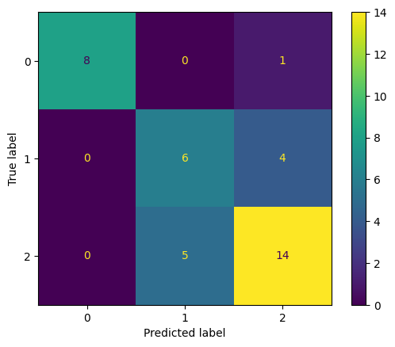
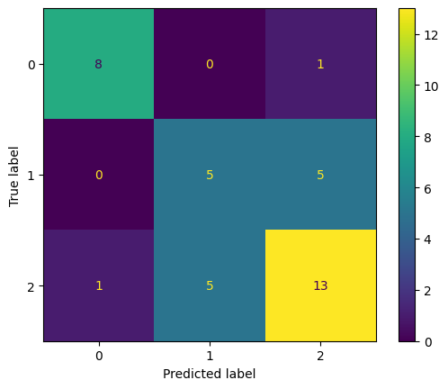
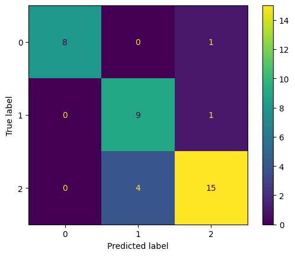

CSCI 5612 Machine Learning for Data Science:
Regional Climate Factor Analysis:
Gradient Boosting
Overview
Ensemble methods make use of many weak learners to make predictions. The weak learners used in these models are pureposefully made to not be highly performant. Instead, weak learners are very simple models such as short decision trees. While this simplicity helps with lowering computation time, the primary reason for this is to prevent overfitting from many individual trees. With many trained weak learners, the ensemble method will combine their predictions into one final predictions, either by using the simple majority vote or by weighting each model's vote.

Boosting is a type of ensemble method that modifies how each weak learner is trained in order to improve the final performance.
There are three prominent types of boosting:
• AdaBoost: When weak learners are trained with the Adaptive Boosting method, the incorrectly classified samples of each previous model are assigned higher weights such that the following model will be more likely to address (and correctly classify) those points.
• Gradient Boosting: Rather than implementing weights onto difficult samples, this method trains weak learner on the residuals of samples.
Residuals are the difference between a prediction and the real sample, and are used with the gradient descent process to minimize loss.
When used with an ensemble model, these differences will be largest where weak learners fail to classify samples, indicating where further training is needed.
• XGBoost: Extreme Gradient Boosting improves upon standard boosting by implementing stronger regularization (using the L2-norm), using multi-threading in tree construction, and applying Newton-Raphson for optimization.
Each of these methods share some similar hyperparameters:
• Learning rate: How much importance is given to each new tree trained as part of an ensemble.
The importances of subsequent trees tend to decrease as more difficult samples are resolved.
• Number of estimators: This is the number of weak learners (usually small decision trees) to be used in the ensemble.
Typically a higher number will result in better predictions, but this could also lead to overfitting.
• Max tree depth: The maximum number of layers (or decisions) that a weak learner tree is permitted to have.
If the tree would be trained to have more layers, it would instead be stopped early.
This saves on computing time and lessens overfitting.

Data Preparation
This operation makes use of a slightly updated dataset from that used in the unsupervised methods.
The dataset has an additional column (the "target variable") that lists the ND-GAIN Index for each country.
This is a score of each country's vulnerability and readiness for climate change effects, developed by the Notre Dame Global Adaptation Initiative using their own methods.
In order for these scores to be usable for classification, they are instead encoded as follows:
• A score between 60-100 means "low" risk
• A score between 40-60 means "normal" risk
• A score between 0-40 means "high" risk
The record of scores for 2022 were incomplete, meaning the number of countries in the current dataset is reduced from 220 to 187.
The new data was sourced from here:
https://gain.nd.edu/our-work/country-index/

In addition to the labeled data, supervised learning requires datasets to be split into training and testing sets. Doing so enables a model to be trained on one and have it accuracy be tested on the other. If the splits were not created, there would be no reliable method to determine how accurate the trained model really is.
Code Implementation
The code used to perform gradient boosting can be found in this file:
https://github.com/Machoo/Regional_Climate_Factor_Analysis/blob/main/boosting.ipynb
Results
The completed gradient boosted models generally performed poorly. Increasing the hyperparameters resulted in improved performance, but none of these early models were able to exceed 0.73 accuracy. The following confusion matrices show the model trained with default hyperparameters, as well as the best performing models when each hyperparameter was tuned.

Accuracy = 0.63
The value 1 corresponds to "low", 2 to "normal", and 0 to "high".

Accuracy = 0.68
The value 1 corresponds to "low", 2 to "normal", and 0 to "high".

Accuracy = 0.65
The value 1 corresponds to "low", 2 to "normal", and 0 to "high".

Accuracy = 0.73
The value 1 corresponds to "low", 2 to "normal", and 0 to "high".

Accuracy = 0.68
The value 1 corresponds to "low", 2 to "normal", and 0 to "high".

Accuracy = 0.84
The value 1 corresponds to "low", 2 to "normal", and 0 to "high".
The final model trained was optimized over each of the parameters tested above. Its accuracy of 0.84 is acceptable, as this value does not indicate any hidden overfitting but does reach an acceptable level.
Conclusion
The gradient boosting model seemed to be a good fit for this dataset. The performance from boosting, and particularly after hyperparameter tuning, is variably better than in previous methods. With boosting models, hyperparameters play a large part in multiple aspects of the models behavior. The learning rate variable can improve the speed that the model trains, but can lead to more erratic problems appearing. The number of estimators being higher usually increases training time and accuracy, but that pattern was not maintained with the tests shown above. The max depth variable is the most difficult to correctly define, as too high of a value tends to result in overfitting while too low of a value would ordinarily result in underfitting and strong inaccuracy. Overall, the selections of hyperparameters used above do not represent the usual patterns that would lead to the best model performance. The greatest improvements that could be made here would likely be through the XGBoost model, as well as extensive hyperparameter tuning with it.